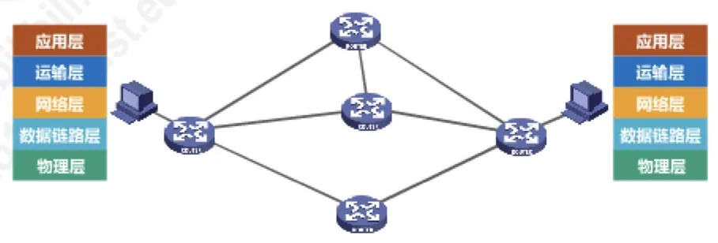
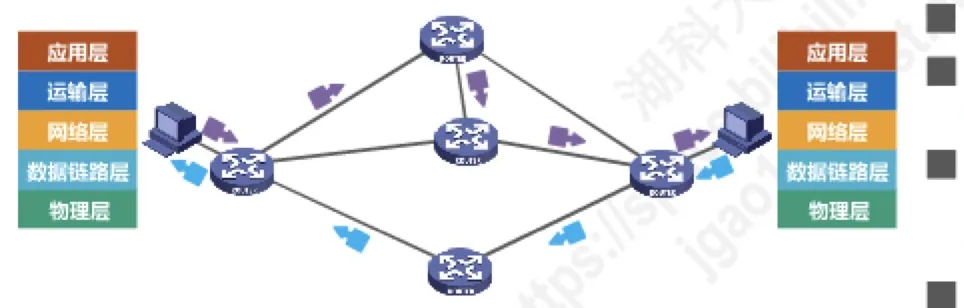

计算机通信与网络 · 第 4 章 网络层
4.2 网络层提供的两种服务
网络层向上面的运输层提供什么质量的服务，是网络层设计中最根本的一个选择：把「可靠」交给网络本身，还是交给两端的主机？这一节把两种服务——面向连接的虚电路服务与无连接的数据报服务——讲清楚，并逐项对比。理解了这个分歧，才能理解为什么因特网的网际层要做成「尽力而为」，也才能明白后面几节为什么都在围绕 IP 数据报的传送展开。
1. 两种服务：可靠通信由谁负责
网络层位于网络的核心，它向上为运输层提供分组传送服务。这种服务可以按「谁对可靠性负责」分成截然不同的两种设计思路：一种是面向连接的虚电路服务，可靠通信由网络来保证；另一种是无连接的数据报服务，可靠通信由用户主机自己来保证。两者的分层结构完全相同，差别在于网络层内部是否先建立一条连接、以及分组沿什么路径走。
2. 面向连接的虚电路服务
虚电路服务的核心思想是：在通信之前，先在网络层建立一条连接。这条连接称为虚电路 VC（Virtual Circuit）——「虚」意味着它并不是一条独占的物理线路，而是沿途各段链路上的一组逻辑信道串起来的通路。它的要点是：
- 可靠通信由网络来保证，这是整个设计的前提；
- 通信双方必须先建立网络层的连接，也就是建立虚电路，然后沿着这条已建立的虚电路按序发送分组；
- 目的主机的地址只在连接建立阶段使用。连接建好之后，每个分组首部不必再携带长长的完整地址，只需携带一个短的虚电路编号；构成虚电路的每一段链路都各自有一个虚电路编号，分组每经过一个结点就按该段链路的编号转发出去；
- 如果在这种通信方式上再使用可靠传输的网络协议，就可以使所发送的分组最终正确到达接收方，即做到无差错、按序到达、不丢失、不重复；
- 通信结束后，需要释放之前所建立的虚电路，把沿途资源交还网络。
历史上不少广域分组交换网都采用面向连接的虚电路服务，例如曾经的 X.25 网，以及后来逐渐过时的帧中继 FR（Frame Relay）、异步传输模式 ATM（Asynchronous Transfer Mode）等。

3. 无连接的数据报服务
数据报服务走的是另一条路：网络层不为通信双方建立任何连接，只负责把一个个分组尽力送出去。它的要点与虚电路服务几乎处处相反：
- 可靠通信应当由用户主机来保证，网络只提供「尽最大努力」的交付；
- 不需要建立网络层连接，有分组就发；
- 每个分组可以走不同的路径，由沿途各路由器各自独立地为它选择下一跳；
- 正因为分组独立选路、且中间结点可能出故障，所以每个分组的首部必须携带目的主机的完整地址；
- 这种通信方式所传送的分组可能误码、丢失、重复和失序——这些差错由用户主机的运输层去发现和处理。
数据报服务的价值在于「简单换来的便宜与灵活」：由于网络本身不提供端到端的可靠传输服务，网络中的路由可以做得比较简单，价格也低廉（与电信网的交换机相比）。因特网采用了这种设计思想，它的分工是——把复杂的网络处理功能置于因特网的边缘（用户主机和其内部的运输层），而把相对简单的、尽最大努力的分组交付功能置于因特网的核心。边缘复杂、核心简单，这正是 IP 网络能够不断扩张、容纳各种新技术的原因。

4. 虚电路服务与数据报服务的对比
把两者的差异逐项排开，可以看出它们不是「哪个更先进」的问题，而是把可靠性、有序性、服务质量这些责任放在哪一层的问题。下表是两种服务的逐项比较。
| 对比方面 | 虚电路服务 | 数据报服务 |
|---|---|---|
| 思路 | 可靠通信应当由网络来保证 | 可靠通信应当由用户主机来保证 |
| 连接的建立 | 必须建立网络层连接 | 不需要建立网络层连接 |
| 终点地址 | 仅在连接建立阶段使用，每个分组使用短的虚电路号 | 每个分组都有终点的完整地址 |
| 分组的转发 | 属于同一条虚电路的分组均按照同一路由进行转发 | 每个分组可走不同的路由 |
| 当结点出故障时 | 所有通过出故障的结点的虚电路均不能工作 | 出故障的结点可能会丢失分组，一些路由可能会发生变化 |
| 分组的顺序 | 总是按发送顺序到达终点 | 到达终点时不一定按发送顺序 |
| 服务质量保证 | 可以将通信资源提前分配给每一个虚电路，容易实现 | 很难实现 |
由于 TCP/IP 体系结构的因特网的网际层提供的是简单灵活、无连接的、尽最大努力交付的数据报服务，本章后续内容就围绕一个主题展开：网际层如何传送 IP 数据报。这也解释了上一节 4.1 中「网络层向上只提供简单灵活的服务」这句话的分量——网络层不做的事，全交给了用户主机的运输层，第 5 章讲 TCP 时还会回到这个分工上。
本节小结
- 网络层可提供两种服务：面向连接的虚电路服务（可靠通信由网络保证）与无连接的数据报服务（可靠通信由用户主机保证）。
- 虚电路服务要先建立网络层连接即虚电路 VC，分组沿同一条虚电路按序转发；目的地址只在连接建立阶段使用，之后每个分组首部只带短的虚电路编号，通信结束还要释放虚电路。
- 数据报服务不建立连接，每个分组独立选路、首部带目的主机的完整地址，分组可能误码、丢失、重复、失序，网络只尽最大努力交付。
- 因特网选择了数据报服务：复杂功能放在边缘的用户主机，核心只做简单的分组交付，因而网络简单、灵活、价廉；也正因为网际层只提供尽最大努力的服务，本章余下各节都在讨论 IP 数据报怎样被传送。